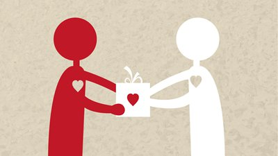

Doar é crucial para criar um impacto positivo na sociedade. Ao compartilharmos recursos, ajudamos a diminuir a desigualdade e a promover um senso de comunidade mais forte. Além de beneficiar diretamente aqueles em necessidade, as doações também proporcionam vantagens fiscais e pessoais, como a satisfação de saber que estamos fazendo a diferença. Ao investir em iniciativas inovadoras e promover um ciclo de generosidade, estamos contribuindo para um mundo mais justo e sustentável, onde todos têm a chance de prosperar com dignidade.



Doar é mais do que um simples gesto de generosidade; é um ato que pode transformar vidas e fortalecer comunidades. Quando decidimos doar, estamos estendendo a mão para ajudar aqueles que enfrentam dificuldades, proporcionando não apenas recursos, mas também esperança e apoio. Cada doação, seja ela de tempo, dinheiro, roupas ou alimentos, tem o poder de fazer uma diferença significativa. Pode significar uma refeição quente para uma família em dificuldades, roupas para aquecer alguém durante o inverno, ou financiamento para projetos educacionais que capacitam jovens a construir um futuro melhor. Além do impacto direto nas vidas das pessoas beneficiadas, doar também fortalece nosso próprio senso de humanidade e conexão com a comunidade. Nos faz lembrar que todos temos a capacidade de contribuir, independentemente do tamanho da nossa doação. É importante escolher organizações ou causas nas quais confiamos e que estão alinhadas com nossos valores. Pesquisar sobre como as doações são utilizadas e o impacto que causam pode nos ajudar a tomar decisões informadas e maximizar o impacto de nossas contribuições. Não importa o que doamos ou quanto podemos doar, cada gesto conta. Se todos nós contribuirmos um pouco, podemos criar um impacto positivo significativo em nosso mundo. Então, vamos estender a mão, compartilhar o que temos e fazer a diferença, um ato de cada vez. Juntos, podemos construir um futuro mais solidário e inclusivo para todos.